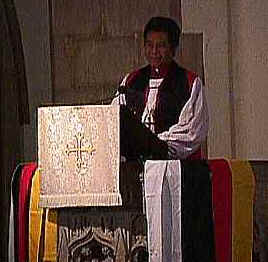

| Un
évêque des Seychelles convie les anglicans à se préoccuper de la notion d'identité culturelle MONTREAL, le 22 mai 1998 "Les Canadiens doivent se pencher sur la question de l’identité culturelle," de dire l’évêque French Chang-Him aux quelques 800 délégués et invités du trente-cinquième synode général de l’Église anglicane réunis à la cathédrale Christ-Church de Montréal. Le synode général se réunit tous les trois ans afin d’aborder des sujets relatifs à la vie de l’église et de la société. Mgr Chang-Him, évêque des Seychelles, qui participe au synode an qualité de partenaire d’outremer, a affirmé aux délégués que l’avenire du Canada dépendait de sa capacitéà se mettre à l’écoute et de comprendre les diverse voix de sa population. "Le Canada est devenu très cosmopolite depuis ma première visite en 1986," a-t-il ajouté. "En 1991, j’ai prêché une homélie qui a dû être traduite en catonnais afin qu’elle puisse être comprise. Or, je n’étais ni à Hong Kong ni à Singapour, mais au centre ville de Toronto." Mgr Chang-Him a renchéri en disants que le Canada devait travailler très fort à la promotion d’une grande collaboration entre les gens provenantd’horizons différents. Se référant au thème du synod "Lift every voice / Faisons entendre nos voix," il a demandé: "Lorsque se feront entendre les diverses voix de ce pays, s’élèveront-elles en une riche harmonie ou en une horrible cacophonie?" Il a, par ailleurs, partagé ses difficultés personnelles à faire la paix avec sa propre identité culturelle: "Ayant des racines à la fois africaines, françaises et asiatiques, j’ai souvent eu des difficultés à savoir qui j’étais." Puis, il a invité tous les canadiens à valoriser la riche diversité qui constitue leur nation et à écouter attentivement ceux qui se trouvent en marge de la société. D’ailleurs, parmis les discussions prévues durant les neufs jours que durera le synode, il y aura un colloque ayant pour thème "nation et identité." Le synode est composé de tous les évêques et représentants du clergé et des laïcs des trente diocèses constituants l’Église anglicane du Canada. -30- |